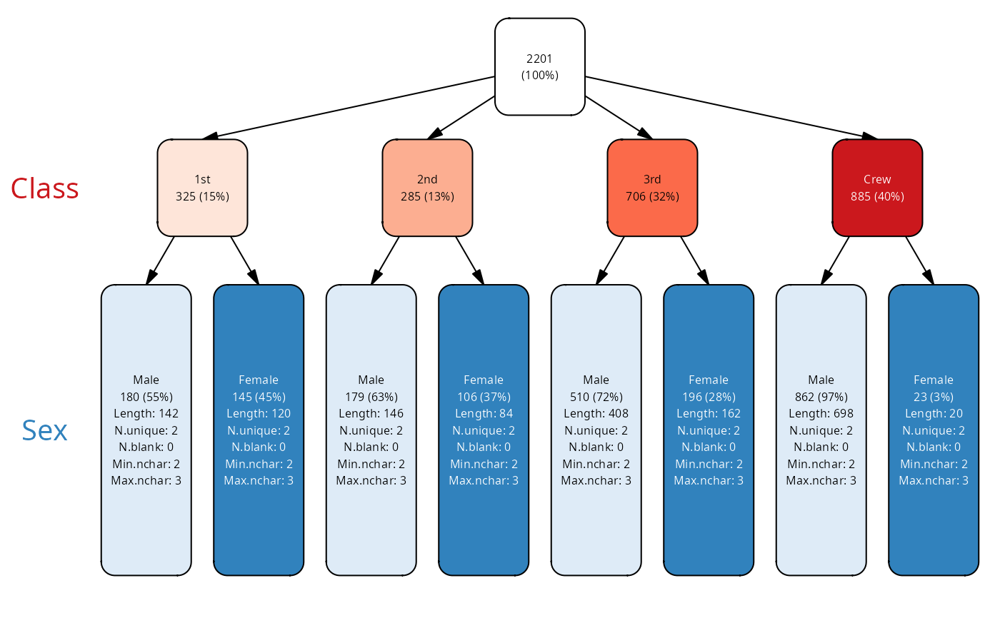

Apply a function to a data frame by nodes in the vtree
vtree_apply.RdApply a function to a data frame by nodes in the vtree. The data frame must contain the same variables as the vtree. It is split by the levels of the variables such that for each node in the vtree, the function is applied to the subset of data that matches the path to that node.
Arguments
- cases
A data frame of cases, with one row per observation.
- vtree
A vtree object.
- FUN
A function to apply to the subset of cases that match the path to each node in the vtree.
- ...
Additional arguments to pass to FUN.
- .mask
An optional logical vector of the same length as the number of nodes in the vtree. If provided, only the nodes for which .mask is TRUE will be processed.
- .twoarg
A logical value indicating whether FUN takes two arguments
Value
A list of the results of applying FUN to each subset of cases named with the node_key of the corresponding node in the vtree.
Details
The function FUN may take two arguments (if the option .twoarg is
TRUE). The first is the subset of the data frame that matches the path
to the node. The second is a one row data frame with the information of
the node (the row of the vtree node data frame corresponding to the
node).
Examples
vt <- vtree_from_freqtable(Titanic, Class, Sex)
# only leaf nodes
mask <- find_nodes(vt, leaf)
# prepare labels with summary of Survived for each node
sumfnc <- \(df, ...) summary(df$Survived)
sm <- vtree_apply(titanicNA, vt, sumfnc, .mask = mask) |>
purrr::map_chr(\(x) paste0(names(x), ": ", x, collapse = "\n"))
# plot with custom layout making more space for the labels in the last
# node ("Sex")
vt |> add_labels() |>
mutate(label = ifelse(mask, paste0(label, "\n", sm[node_key]), label)) |>
add_layout(varspace = c(root=1, Class=1, Sex=3),
dir="tb", lheight=.8) |>
plot(dir="tb")
